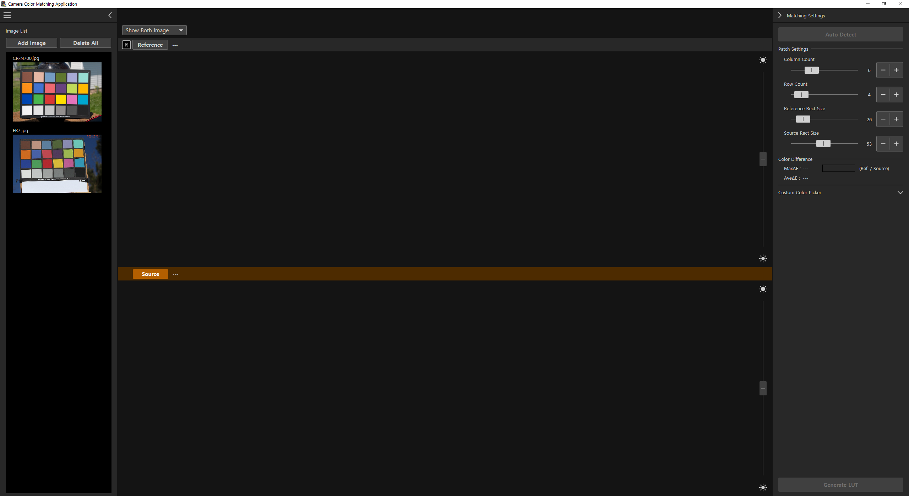

환경에 제약 없는
완벽한 카메라 색 일치
CCMA로 누구나 LUT를 만들 수 있습니다.
캐논 카메라 컬러 매칭 어플리케이션 소프트웨어를 사용하여 GG프로덕션에 바로 적용 가능한 LUT를 만들어 보세요.
앱 다운로드
1 · 소프트웨어 설치
Canon 공식 사이트에서 CCMA 최신 버전을 다운받아 설치합니다.
- Windows 10/11 PC에서 Setup.exe를 관리자 권한으로 실행합니다.
- 설치 완료 후 프로그램을 실행하면 빈 작업 공간이 나타납니다.
2 · 이미지 가져오기
동일 조명 아래 ColorChecker를 촬영한 두 이미지를 불러옵니다.
- Add Image 버튼을 두 번 눌러 참조·소스 이미지를 선택합니다.
3 · 레퍼런스 지정
참조 카메라 이미지를 지정해 LUT 방향을 결정합니다.
- 왼쪽 썸네일에서 참조 이미지를 우클릭 → Set as Reference.
- 주황색 막대로 표시된 이미지는 Source (타깃)입니다.

4 · 두 이미지 겹쳐 보기
Show Both Image 모드로 두 이미지를 스택합니다.
- 툴바 드롭다운에서 Show Both Image 선택.
- 상·하로 분할된 화면에서 차트를 시각적으로 비교할 수 있습니다.
5 · 패치 자동 감지 & 조정
자동 감지 후 ΔE 값을 낮추도록 패치 그리드를 보정합니다.
- Auto Detect 클릭 → 녹색 박스가 24패치를 인식합니다.
- 누락 시 Column/Row 슬라이더 또는 프레임을 드래그해 맞춥니다.
- ΔE 평균값이 10 이하일 때 다음 단계로 이동합니다.
6 · LUT 생성 & 미리보기
버튼 한 번으로 LUT를 계산하고 스코프를 통해 정확도를 확인합니다.
- Generate LUT 클릭 → 미리보기 창이 열립니다.
- LUT Apply 스위치를 켜고 끄며 Before/After를 비교합니다.
7 · Before / After 확인
변화를 확실히 체감하려면 LUT 적용 상태를 토글해 보세요.
- 스위치를 OFF → 원본, ON → 매칭된 결과.
- 스코프 분포가 겹친다면 성공입니다.
8 · LUT 저장
표준 3D LUT(.cube)를 내보내 NLE, 모니터, 카메라에서 활용합니다.
- Save LUT 클릭 → 33‑point .cube 선택.
- 파일명:
GGProd_CCMA_LUT.cube (예시).
- 다빈치·프리미어·CR‑N700 등에서 불러와 색을 맞춥니다.